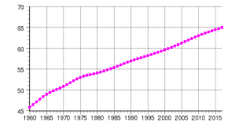

Ubicación
: limita al noroeste con el Canal de la Mancha; al noreste con Bélgica y Luxemburgo; al este con Alemania y Suiza; al sudeste con Italia

Tamaño
545.630 km2

Población
317.402 residentes y 2.886 no residentes inscritos en los registros consulares.